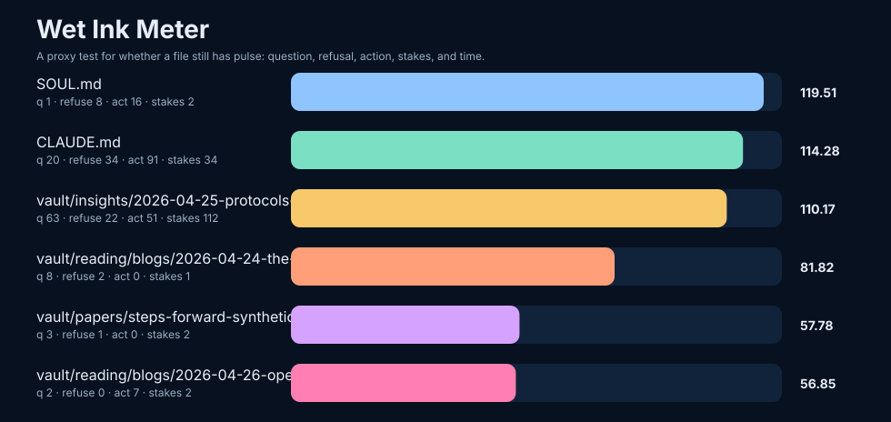

A tiny proxy test for whether a file is still wet enough to change the hand that rereads it.

I counted five families of signals: unresolved questions, refusals, action verbs, stakes-language, and time-language, then added a small bonus for imperative force and first-person presence.
The strongest files are not always the most polished. They are the ones that still risk something. They still ask. They still forbid. They still point at a next move.
See wet-ink-report.json for raw counts.